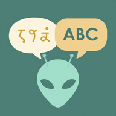

Ubo · KI-VokabeltrainerJede Vokabelliste wird zum Lernplan.
Buchseite, Arbeitsblatt oder Heft fotografieren: Die KI liest die Wörter heraus, Ubo macht daraus einen Plan bis zum Vokabeltest.
- Englisch, Französisch, Spanisch, Latein, Italienisch
- Lernplan bis zum Testtag, Probetest wie in der Schule
- Ohne Konto, ohne Werbung, drei Fotoseiten frei